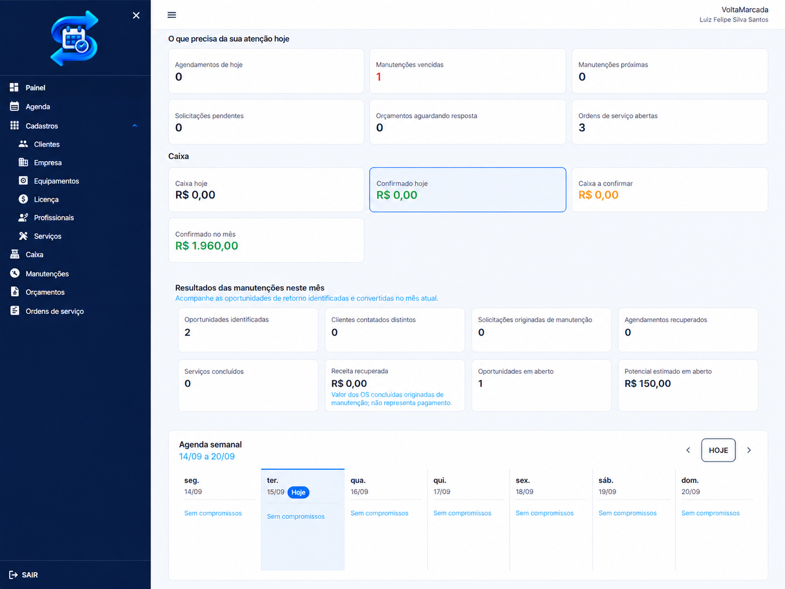
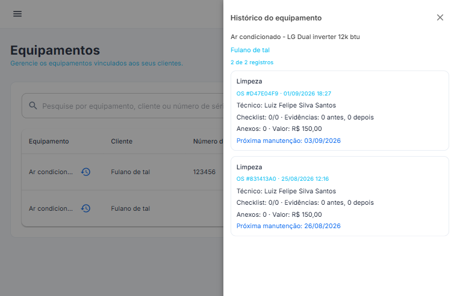
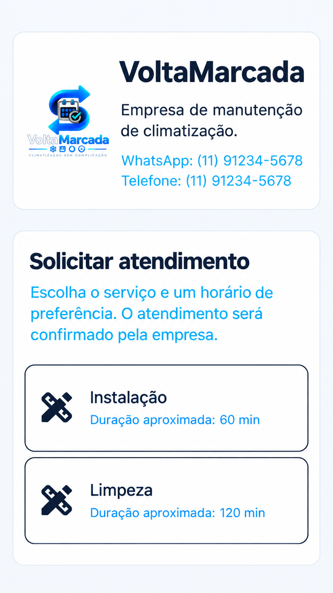
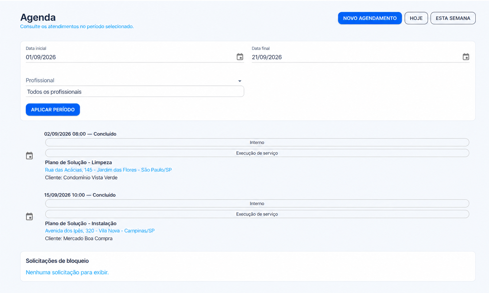
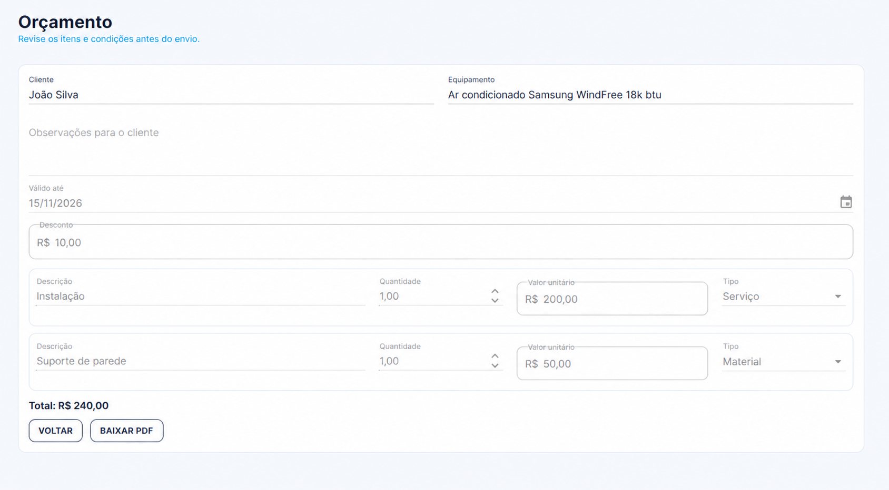
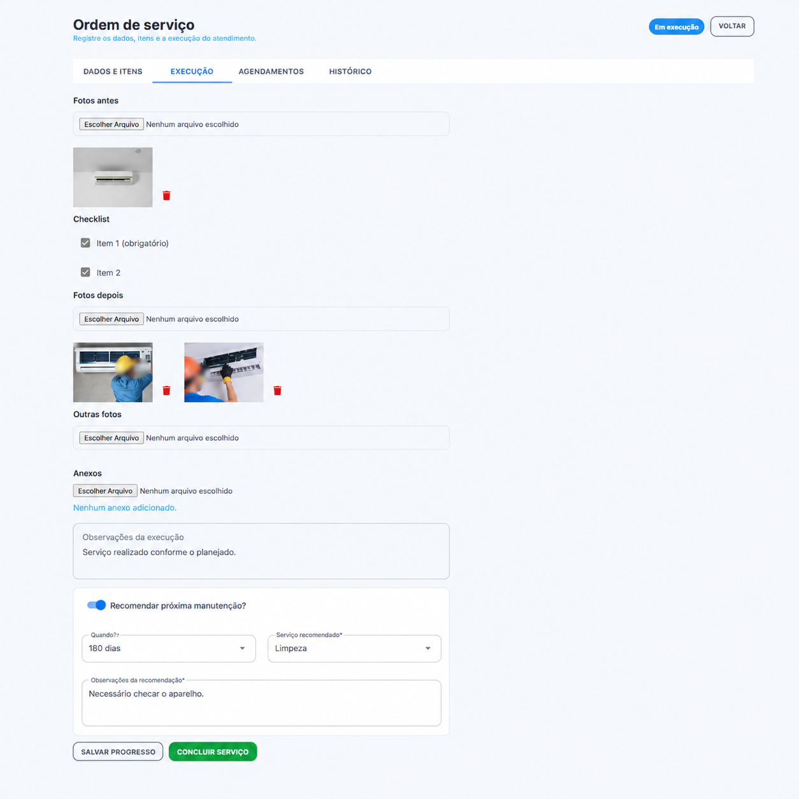
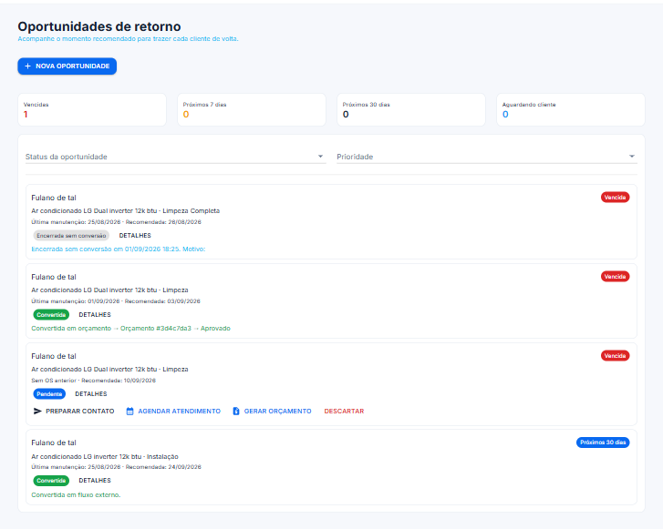

Clientes esquecidos
O histórico fica espalhado e ninguém lembra de retomar o contato na data certa.
Para empresas de serviço que voltam a crescer
O VoltaMarcada ajuda você a não esquecer dele.

O custo de esquecer
Quando a rotina acontece no WhatsApp e em planilhas, clientes prontos para voltar somem do radar.
O histórico fica espalhado e ninguém lembra de retomar o contato na data certa.
A revisão preventiva vence sem aviso e a oportunidade vira uma urgência para o cliente.
Sem uma próxima ação clara, um serviço concluído termina antes de gerar novo negócio.
Serviço concluído ≠ relacionamento encerrado.
Como funciona
Da primeira solicitação ao próximo cuidado, tudo fica conectado em um único fluxo.
A equipe atende o cliente.
O trabalho fica registrado.
A execução ganha histórico.
A recomendação recebe uma data.
O sistema mostra quem está na hora de chamar.
A equipe retoma a conversa.
O ciclo recomeça com contexto.

Histórico do equipamento
Relacione cliente, equipamento, serviços anteriores e a próxima recomendação em um histórico fácil de consultar.

Página pública
Compartilhe uma página profissional pelo WhatsApp. O cliente indica a data e o horário de preferência; sua empresa analisa a agenda e confirma o atendimento.
Tudo em um só lugar
Do primeiro contato ao próximo retorno, tenha os recursos que a sua equipe usa todos os dias.
Veja visitas, responsáveis e horários em um só lugar.
Registre o que foi feito, do começo ao fim.
Envie propostas claras e acompanhe a resposta.
Acompanhe valores pendentes, recebimentos e o caixa da operação.
Tenha contexto antes mesmo de chegar ao local.
O diferencial
Saiba quem contatar, quando e por qual equipamento — antes que o cliente esqueça de você.
Agenda da equipe
Organize os atendimentos, os responsáveis e os horários da equipe em uma agenda feita para a rotina de campo.


Orçamentos
Monte serviços, materiais, descontos e validade em um orçamento simples de compartilhar e acompanhar.
Ordem de serviço
Crie uma ordem de serviço para atendimentos que chegaram por telefone, indicação, visita direta ou depois de uma solicitação pública.
O VoltaMarcada organiza o atendimento e prepara o contexto. Você continua usando o canal que seus clientes já conhecem.

Receita recorrente começa na rotina
Transforme cada manutenção concluída em um lembrete acionável para a sua equipe. A VoltaMarcada mostra quem está perto da próxima revisão para que o contato aconteça no melhor momento.
Começar grátis
Tudo conectado
Solicitação, orçamento, serviço, histórico e próxima manutenção conversam entre si para a sua equipe agir com segurança.
Feita para empresas de climatização e refrigeração — e também para qualquer equipe que instala, repara, inspeciona ou mantém equipamentos e quer construir relações que voltam.
Preço simples
Sem planos confusos, sem taxa de implantação e sem compromisso no início.
Plano VoltaMarcada
R$ 49,90/mês
14 dias grátis. Sem cartão de crédito.
Perguntas frequentes
Não. Você pode usar todos os recursos do teste por 14 dias sem informar cartão.
Não. Ela nasceu com a rotina de climatização em mente, mas atende equipes de manutenção, assistência técnica, refrigeração, elétrica e outros serviços recorrentes.
Não. Ele pode abrir sua página pública pelo celular e enviar uma preferência de atendimento pelo navegador.
Sim. Você mantém a liberdade para registrar atendimentos vindos por telefone, WhatsApp, indicação ou visita direta.
Faça cada atendimento contar de novo
O serviço termina. O cliente não.
Começar 14 dias grátisSem cartão de crédito.